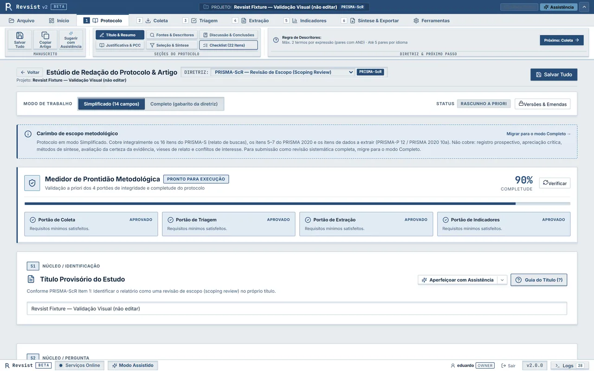

Etapa 1 de 6
1. Protocolo de Pesquisa
Defina e versione a pergunta condutora, o framework conceitual (PICO, PICOS ou PCC) e os critérios de inclusão e exclusão antes de iniciar as buscas. O sistema vincula o projeto a uma das 11 diretrizes metodológicas disponíveis e bloqueia alterações retroativas nos critérios após o início da triagem, assegurando a conformidade exigida por periódicos e comitês de ética.
